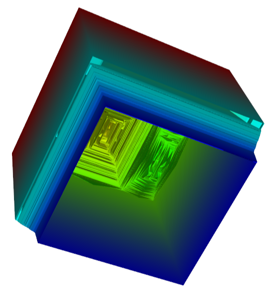
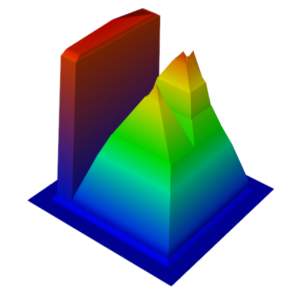
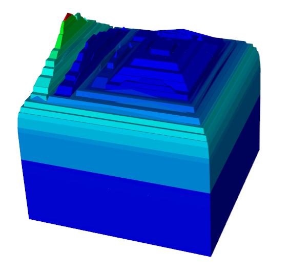

denali
denali
- Windows v1.0 (64 bit, binary)
- Ubuntu Linux v1.0 (64 bit, binary)
- Build v1.0 from source for Windows or Linux
- Get the bleeding-edge source from GitHub
Many sources of data — from complex networks to probability distributions — can be represented or summarized by tree-like structures. These trees, however, are often complicated and difficult to visualize. Moreover, it is often the case that one not only wants to visualize the tree-like structure of his or her data, but also a scalar attribute on top of it. Traditional methods, such as simply plotting the tree as a graph in the plane, offer limited opportunities to do so.
Denali is a tool for visualizing trees as landscape metaphors — mountain-like surfaces which intuitively represent both the structure of complicated trees and scalar attributes defined on their nodes. To learn more about landscape metaphors, see the tutorial.
For example, suppose we visualize a hierarchical discussion on an online forum consisting of nearly 1000 comments. If we visualize the tree using the traditional approach, what we obtain is hard to visually parse. For example, graphviz produces the visualization below. Enlarging a section of the image shows that the result can be complex and difficult to understand, even locally.

Denali not only presents the complicated tree structure in an easy-to-interpret form, but also allows the user to manipulate, zoom, simplify, and query the landscape interactively.
Can denali be used for your application? Denali can be used to visualize such diverse structures as probability densities, complex networks, and protein conformational spaces. At the basic level, though, Denali requires its input to be in the form of a scalar tree — a tree whose nodes are associated with scalar values. Included with denali are tools to help you extract such scalar trees from common sources of data, such as scalar functions defined on point clouds. You can also extract tree-like structure using a method you provide, and use denali to visualize the result.
The figure below shows the conceptual "pipeline" you'll follow when using denali:

The extraction step is crucial: it is where the input data is transformed into something that can be visualized with denali. Included alongside denali is ctree, a tool for extracting contour trees from functions defined on graphs and point clouds. With it, you can visualize data from many different sources. Several important applications are shown in the table below:
| Data | Extraction | Examples |
| Scalar tree | None | Hierarchical clusterings of point clouds, internet comment threads |
| Scalar function on a graph or point cloud | Contour tree | Probability densities, cost functions, parameter spaces |
| Data on a tree-like manifold | Contour tree with geodesic distance | Mouse cytometry data |
For more concrete examples of using denali, see the gallery.
- Fully interactive: Explore your data using the mouse to fly through an interactive, 3-d landscape.
- Selective simplification: Visualizing a noisy data set? Simplify specific regions of the visualization using the interactive simplification tool, allowing important trends to be more clearly visible.
- Powerful callback system: Integrate denali into your workflow. Run your own code — written in whatever language you'd like — whenever you make a selection in the landscape.
- Custom coloring: Color the landscape according to your needs. Compare two scalar functions by using the height to represent one, and the color to represent the other.
- Re-weight your data: Specify a custom weight map to emphasize parts of the landscape. Quickly clear or swap this map for another to make fast comparisons.
- Included utilities: The included utilities make it easy to transform your data into a visualization. Streamline the creation of your callback code by using the included Python package.
- Thorough documentation and demos: An extensive tutorial is included, introducing you to denali, landscape metaphors, and the included tools. Numerous demos, complete with code, are provided to help you apply denali to your specific application.

|
Hierarchical clustering of handwritten digit imagesGain an understanding of the structure of your high dimensional data by visualizing the tree produced by a hierarchical clustering algorithm. This demo clusters images of handwritten 0's, 1's, and 7's. Clicking a component of the landscape displays an average image of the digits which exist in that region. |
|
|
Internet comment threadVisualize the structure of an online comment thread as a landscape. Use colors to find controversial comments. Clicking the landscape prints the corresponding comment to the screen. |
|  |
Neural network model spaceExplore the parameter space of a neural network model trained to represent the sine function. Local minima of the cost function are represented as plateaus in the landscape. Clicking on a component in the visualization evaluates the corresponding model and plots its output, comparing it to the ideal sine function. |
|  |
Interactively resample a probability distributionVisualize a mixture of Gaussians in four dimensions as a landscape. Clicking on a part of the landscape automatically resamples the pdf in the region corresponding to the selection and redraws the visualization. |
|  |
Mouse cytometry dataCertain type of mouse cells can be organized into a hierarchy. Given data from ten markers, forming a point cloud embedded in 10 dimensions, but lying on a tree-like manifold, Denali is able to recover the hierarchical structure. The color function shows the response of individual markers so that each cell type can be identified by the user. |
{kind=link}
{kind=link}
{kind=link}
doc subfolder of your download),
or online, here:
- For the detailed and complete guide to using denali, see the main documentation.
- If you're looking for a quick-start guide, see the tutorial.